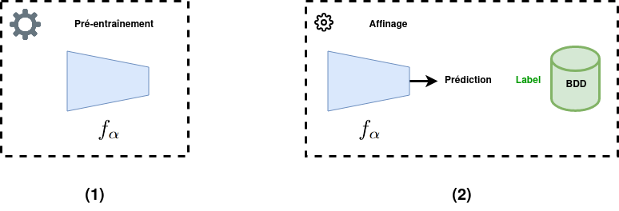
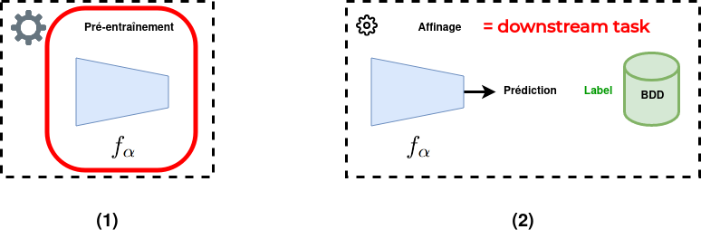
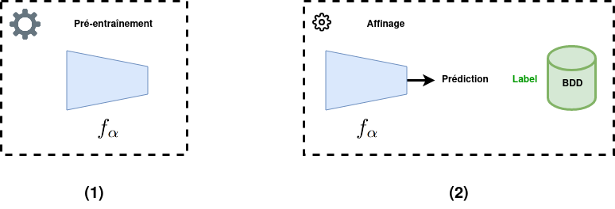
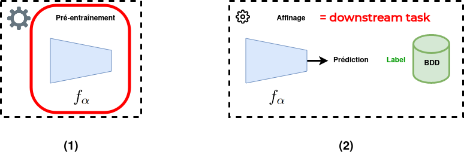
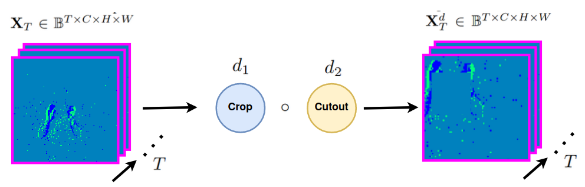
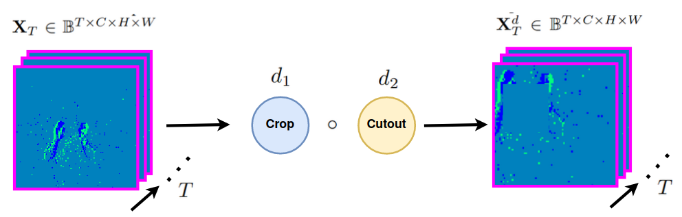
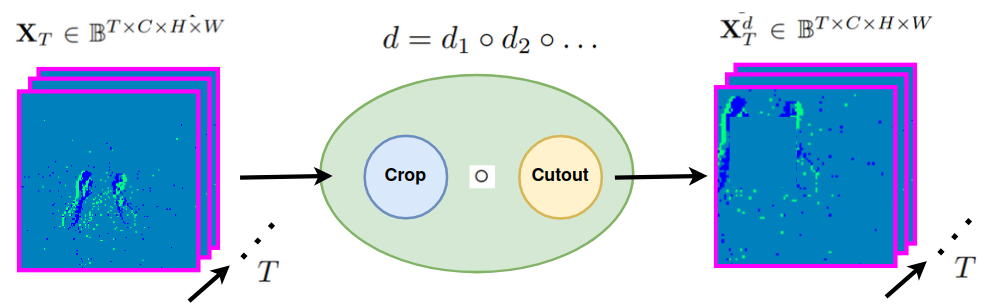
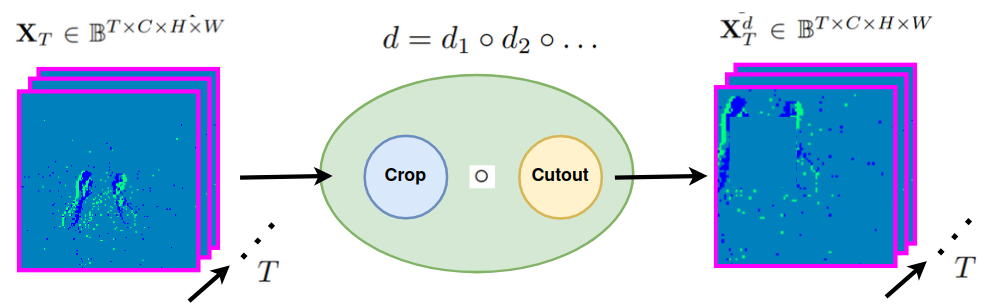
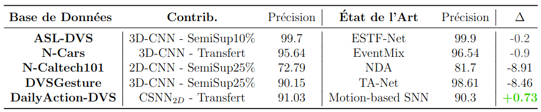

Introduction
👁️🗨️ Vision Artificielle
📖 Extraire automatiquement des informations à partir de données visuelles


- Applications nombreuses : médical, industriel, sécurité, robotique, ...
- Comment ? Réseaux de Neurones Artificiels ( ANNs ) par l'apprentissage profond
🔋 Consommation Énergétique
Estimation d'énergie consommée lors d'une inférence des modèles de l'état de l'art par année[Desislavov2023]


🔋 Consommation Énergétique
- Évolution des modèles
- Complexité (profondeur, paramètres, ...)
- Puissance de calculs requise
- Consommation énergétique
- Enjeux majeurs
- Environnement
- Applications
➡️ Problématique principale
💻 Technologie Neuromorphique
📖 Technologie inspirée par le fonctionnement des neurones biologiques.
- 📷 Capteur : Caméra événementielle
- 🧠 Traitement : Réseaux de neurones impulsionnels (SNN)
- Systèmes de vision économes en énergie
➡️ Solution prometteuse
📷 Caméra Événementielle
- Inspirée de la biologie
- Événements asynchrones lors d'un changement d'intensité du pixel
- ➡️ Mouvement
🧠 Réseaux de Neurones Impulsionnels
- Bio-inspirés (neurones impulsionnels)
- Neurones communiquent par impulsions asynchrones
Vision Neuromorphique
- 📖 Intégrant une caméra événementielle et/ou un SNN
- 🤝 Traitement asynchrone en commun
⛰️ Défis du Neuromorphique
- Par rapport aux méthodes conventionnelles
- Domaine moins étudié
- Technologies moins matures
- ➡️ Performances et complexité des approches neuromorphiques moins avancées
- Besoins du domaine
- Développement de nouvelles approches en vision neuromorphique
- Analyses approfondies pour leur compréhension
🎯 Objectifs
Progrès des technologies neuromorphiques dans les tâches de vision artificielle
- 🧱 Conception de modèles d'apprentissage profond avec SNNs et/ou caméras événementielles
- 🔎 Études expérimentales pour approfondir nos connaissances
🖼️ Contextes
🗓️ Organisation
- État de l'art
- SNNs pour la localisation d'objet
- Pré-entraînement auto-supervisé pour la vision événementielle
- Conclusion
État de l'Art
📚 Trois Domaines
- 👴 Approches classiques : ANN + images
- ⚡ Réseaux de neurones impulsionnels
- 📸 Vision événementielle : vision artificielle avec des caméras événementielles
👴 Approches Classiques
- 👴 Historiquement :
- Coucou
- 🗼 Apprentissage profond : entraînement d'une architecture ANN profonde
caca
👴 Approches Classiques
Évolutions
🗒️ Formulations
🗒️ Formulations
⚡ Réseaux de Neurones Impulsionnels
Explication du neurone impulsionnel (vs ANN)
⚡ Réseaux de Neurones Impulsionnels
Modèle IF & LIF
⚡ Réseaux de Neurones Impulsionnels
Codage neuronal
⚡ Réseaux de Neurones Impulsionnels
Techniques d'apprentissage
⚡ Réseaux de Neurones Impulsionnels
Surrogate gradient
⚡ Réseaux de Neurones Impulsionnels
Matériel Neuromorphique
⚡ Réseaux de Neurones Impulsionnels
Verrous Scientifiques
📸 Vision Événementielle
Caméra
📸 Vision Événementielle
Avantages
📸 Vision Événementielle
Évolution caméras + changement paradigme
📸 Vision Événementielle
Formulation génération événements
📸 Vision Événementielle
Représentation événements
- Images événementielles (détails)
- Surfaces temporelles
- Voxels
- Graphes
- Entraînable
- Traitement direct
📸 Vision Événementielle
Contribution Bina-Rep
📸 Vision Événementielle
Tâches de vision
📸 Vision Événementielle
Bases de données (différentiations)
📸 Vision Événementielle
Verrous scientifiques
🗒️ Bilan
Introduire les problèmes qu'on traite et basta-zer
SNNs pour la Localisation d'Objet
Pourquoi ?
Preuve de Concept Préliminaire
Parler brièvement de DECOLLE
Contexte de l'Étude
- Dévelo
Formulation - Localisation d'Objet
Métrique d'Évaluation
Configuration - Latence Temporelle
Expliquer comment on fait
Modèle SNN
Modèle ANN
Images Statiques - Base de Données
Images Statiques - Codages Neuronaux
Images Statiques - Codages Neuronaux
Images Statiques - Latence Temporelle
Images Statiques - Corruptions
Baisse de Précision Relative
Images Statiques - Corruptions
Événements - Bases de Données
Événements - Latence Temporelle
Événements - Latence Temporelle
Événements - Corruptions
Détailler les corruptions
Événements - Corruptions
Résultats
Consommation Énergétique
Consommation Énergétique
Conclusion de l'Étude
Spiking-Fer
Pré-entraînement Auto-supervisé
pour la Vision
Événementielle
🖼️ Contexte
- 📈 Modèles profonds pour la vision événementielle
- Apprentissage supervisé : nécessite beaucoup de données annotées
- ➡️ Complexifie le développement de nouvelles applications
- Solution Proposée : Apprentissage auto-supervisé
- Pré-entraîner un modèle sur des données sans nécessiter d'annotations
📚 Solutions Existantes
 




- Supervisé : utiliser une grande BDD générique annotée puis affiner
- 👎 peu de BDDs événementielles pertinentes

- Apprentissage Auto-supervisé de Représentation (SSRL) : capturer les propriétés et motifs intrinsèques des données
- 👍 pas d'annotations requises
- 👍 proche du domaine d'application
📚 Solutions Existantes - SSRL événementiel
- Peu de travaux existants
- Tâches de bas-niveau (flux optique, ...) [TODO,TODO]
- Travaux concurrents pour les réseaux profonds (3)[TODO,TODO,TODO]
- 👎 limités à du comportement statique
- 👎 concentrés sur un seul type de réseau (ViT / SNN)
📚 Solutions Existantes - SSRL événementiel
Constat
- Domaine très prometteur pour réduire le besoin en annotations...
- ... mais très peu étudié
⚙️ Méthode
- 🧠 Modèles visés : encodeurs convolutifs légers (CSNN, 2D-CNN, et 3D-CNN)
- 📁 Polyvalence des données : comportements statiques et dynamiques
- 👥 Architecture d'encodage conjoint
- Architecture en deux branches
- Deux versions transformées de la même entrée
- Augmentations de données événementielle (EDAs)
⚙️ Méthode
Augmentation de Données Événementielle (EDA)
 

 

Une EDA peut être une composition d'autres EDAs
⚙️ Méthode
Architecture d'Encodage Conjoint[TODOvicreg,TODObarlow]


⚙️ Méthode
Encodeurs étudiés
- 2D-CNN : ResNet-18[TODOresnet]
- 3D-CNN : MC3-ResNet-18[TODOresnet3d]
- CSNN : SEW-ResNet-18[TODOsew]
- ℹ️ Même complexité ($\approx$11M paramètres)
- ℹ️ Représentations $\mathbf{Y}^d \in \mathbb{R}^{K = 512}$
⚙️ Méthode
Variantes


- 👬 Jumeaux : architecture classique avec poids partagés
- 👨🎓🧑🏫 Étudiant-Professeur : CSNN (étudiant) couplé à 2D-/3D-CNN (professeur)
🔎 Étude sur les EDAs
À chaque inférence, une composition $d_A$ / $d_B$ est échantillonnée d'une distribution $D$


⚠️ Définir une distribution $D$ efficace est essentiel ⚠️
🪄 EDAs Étudiées
Exemple
Augmentations Communes
Augmentations Communes
Augmentations Communes
Augmentations Communes
Augmentations en Découpage
Augmentations en Découpage
Augmentations en Découpage
Augmentations en Découpage
Augmentations en Découpage
Augmentations en Découpage
Augmentations en Découpage
Augmentations Géométriques
Augmentations Géométriques
Augmentations Géométriques
Augmentations Géométriques
Augmentations Géométriques
Augmentations Géométriques

📖 Transformations couramment utilisées, ne partagent pas de caractéristiques communes.


📖 Transformations impliquant la suppression d'événements.


📖 Transformations impliquant une distorsion spatiale des événements.


Bruit d'activité de fond (Noise)
Inversion de polarité (PolFlip)
Recadrage (Crop)
Découpe par zone (Cutout)
Découpe par durée
Découpe aléatoire
EventDrop
🆕 EventCopy
🆕 EventCopyDrop
Translation statique (StatTran)
Rotation statique (StatRot)
🆕 Translation dynamique (DynTran)
🆕 Rotation dynamique (DynRot)
🆕 StatDynGeo
⚖️ Évaluation des Performances
🚫 Pas de protocole d'évaluation commun en SSRL événementiel
- ✅ Solution : définir des protocoles d'évaluation standard pour les travaux futurs
- BDDs populaires (classification ➡️ taux de précision)
- Trois protocoles pour évaluer des aspects spécifiques du SSRL
📁 Bases de Données
Protocole 1️⃣ - Évaluation Linéaire

🎯 Est-ce que la méthode de SSRL extrait des caractéristiques pertinentes ?
Protocole 2️⃣ - Apprentissage Semi-supervisé
🎯 Est-ce que la méthode de SSRL permet de réduire le besoin en annotations ?
Protocole 3️⃣ - Transfert d'Apprentissage
🎯 Est-ce que les caractéristiques apprises peuvent être transférées à d'autres données ?
🔎🪄 Étude sur les EDAs
➕ Étude incrémentale
- Trois étapes progressives : une étape par catégorie d'EDA
- Pour chaque étape, on conserve la combinaison d'EDAs la plus performante de l'étape précédente
- Protocole d'évaluation linéaire sur DVSGesture
🔎🪄 Étude sur les EDAs
Résultats


🔎🪄 Étude sur les EDAs
Interprétations
- ➕ EDAs communes $\rightarrow$ ➕ performances
- Une EDA géométrique et une EDA en découpage $\rightarrow$ ➕ performances
- Relations
OneOf👍 (EventDrop, ...)
$D = \{\texttt{Noise,Crop,PolFlip,StatDynGeo,}$ $\texttt{EventCopyDrop}\}$
⚖️ Évaluation des Performance
Évaluation Linéaire et Apprentissage Semi-supervisé
Évaluation Linéaire et Apprentissage Semi-supervisé
Évaluation Linéaire et Apprentissage Semi-supervisé
Évaluation Linéaire et Apprentissage Semi-supervisé
Évaluation Linéaire et Apprentissage Semi-supervisé
Évaluation Linéaire et Apprentissage Semi-supervisé
Transfert d'Apprentissage
Transfert d'Apprentissage
Transfert d'Apprentissage


2D-/3D-CNNs $>$ CSNN
Intérêt de la variante "Étudiant-Professeur"
✅ transférabilité des représentations apprises
Mise en Perspective
❓ Comment se compare-t-on aux méthodes supervisées ?
- 💪 Résultats compétitifs...
- 🪶 ... avec des modèles plus légers...
- ✂️ ... sans apprentissage supervisé !
🔎 Analyses des Représentations
- ⚠️ Les taux de précision sont des mesures indirectes
- ➡️ Analyser les propriétés des représentations
- Deux analyses
- Qualité des représentations : compromis d'Uniformité - Tolérance
- Similarité des représentations : analyse par alignement de noyau centré linéaire (CKA linéaire)
🔎 Similarité des Représentations
- CKA Linéaire :
- Utilisée en SSRL pour les images[TODOCKA]
- Compare les représentations de deux encodeurs
- Donne une valeur $\in [0,1]$ évaluant leur similarité
- 🎯 Nos objectifs :
- Comparer tous les encodeurs entre eux...
- ... selon chaque bloc résiduel
- Base de données : DVSGesture
🔎 Similarité des Représentations
📍 Bilan
- Contributions
- Méthode de SSRL événementielle pour les encodeurs convolutifs
- Protocoles d'évaluation standardisés
- Études expérimentales
- Observations
- 💪 Efficacité et polyvalence de la méthode
- 🪄 Définition d'une distribution d'EDAs efficace
- 🔎
🔓 Améliorations Possibles
- Spécialiser la méthode selon le type d'encodeur
- Diversifier les protocoles d'évaluation (détection, ...)
- Méthode fonctionnant sur une seule étape temporelle
Conclusion
Bilan des Contributions
Travaux Futurs
Merci !
References
- [NameYEAR]: M. Sajjad, et al. "A comprehensive survey on deep facial expression recognition: challenges, applications, and future guidelines"
- [Bokovoy2019]: A. Bokovoy et al. "Real-time Vision-based Depth Reconstruction with NVidia Jetson"
- [Desislavov2023]: R. Desislavov et al. "Trends in AI inference energy consumption: Beyond the performance-vs-parameter laws of deep learning"
Annexes
Bina-Rep
dIoU
VICReg

- Invariance : minimiser la distance entre les deux encastrements de la même entrée
- Variance : maintenir la variance de chaque variable d'un même vecteur dans un lot au-dessus d'un seuil
- Covariance : minimiser la covariance entre les valeurs d'un même vecteur
Distribution EDAs

Mise en Perspective - SSRL événementiel
ASL-DVS

Mise en Perspective - SSRL événementiel
N-CARS

Mise en Perspective - SSRL événementiel
N-CALTECH101

Mise en Perspective - SSRL événementiel
DVSGesture

Mise en Perspective - SSRL événementiel
DailyAction-DVS

Représentation - Uniformité et Tolérance
Expliquer ce que c'est
Représentation - Uniformité et Tolérance
Résultat + interpretations